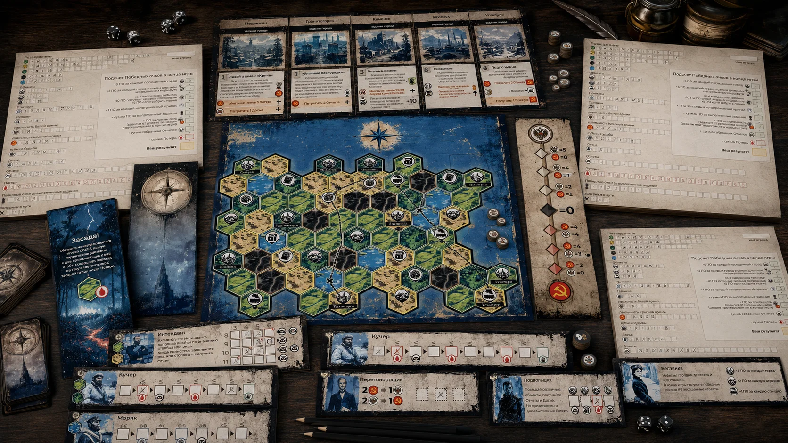
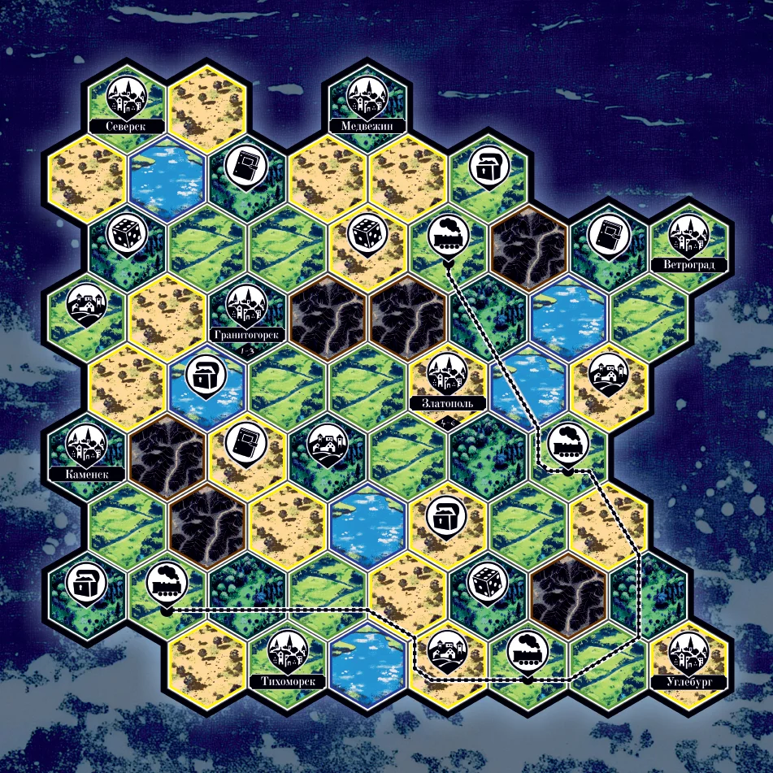
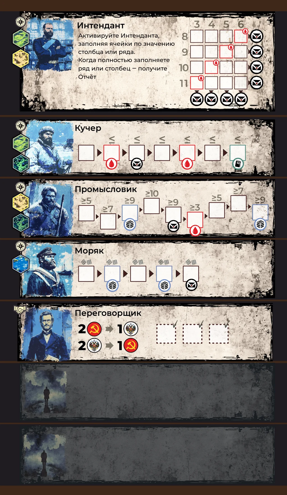

Последний приказ —
отличить результат от отчёта
The Last Order —
tell results apart from reports
Настольная игра для госслужащих на тренировку компетенции «результативность». Сеттинг — Гражданская война 1918 года, игроки — адъютанты, путешествующие по карте, собирающие донесения и припасы и зарабатывающие победные очки. Часть серии из трёх игр для РАНХиГС. A board game for civil servants training the "results, not reports" muscle. Setting — the Russian Civil War of 1918; players are adjutants, moving across a map, collecting dispatches and supplies, and earning victory points. Part of a three-game series for RANEPA.
Что этоWhat it is
Тренажёр компетенции «результативность» для госслужащих. Гипотеза, на которой стоит игра: у чиновника много срочной работы, итогом которой часто становится отчёт о деятельности, а не изменение ситуации. Игра тренирует навык отличать «срочное и важное = эффект» от «просто срочного = отчёт» и заставляет постоянно выбирать приоритет под давлением.
Сеттинг — Гражданская война 1918 года. Игроки — адъютанты, чьё политическое предпочтение не задано: ты сам решаешь, кому помогать (Красным, Белым или никому), и накапливаешь победные очки разными способами. Каждый ход бросаются кубики путешествий, и каждый игрок параллельно строит свой маршрут на личной карте региона; общие города открывают активному игроку доступ к заданиям и компаньонам. На карте — города, деревни, железные дороги, тайники, кубики Судьбы, досье, горы. У каждого игрока — отряд из специализированных компаньонов с разной механикой активации: Кучер, Промысловик, Моряк, Интендант, Переговорщик и дополнительные.
Это вторая из двух игр серии для РАНХиГС, которые я сделал полностью самостоятельно (первая — «Борьба со стихией» на компетенцию командности).
A trainer for the "deliver results" competence in civil servants. The hypothesis behind the game: an official has plenty of urgent work whose actual output is a report on activity, not a change in the situation. The game trains the muscle to tell "urgent + important = effect" apart from "just urgent = a report", and forces constant priority choice under pressure.
Setting — the Russian Civil War of 1918. Players are adjutants whose political loyalty isn't fixed: you choose who to support (Reds, Whites, or no one) and accrue victory points via different paths. Each turn rolls travel dice, and every player builds their own route on a personal regional map; shared cities open quests and companions for the active player. The map has cities, villages, railways, caches, Fate dice, dossiers, mountains. Each player has a squad of specialized companions with different activation rules: Coachman, Tradesman, Sailor, Quartermaster, Negotiator, and additional ones.
This is the second of two games in a RANEPA series that I made entirely on my own (the first was "Fighting the Element", on the team-coordination competence).
Что я сделалWhat I did
Сделал игру полностью: геймдизайн и баланс, кубиковая механика и система компаньонов, экономика победных очков, шкала противостояния Красных и Белых, кейсы и засады, нарратив сеттинга, графика и иллюстрации, оформление коробки.
I built the game end to end: game design and balance, the dice mechanic and companion system, the victory-points economy, the Reds/Whites confrontation scale, quests and ambushes, the setting's narrative, graphics and illustrations, the box.
Компоненты и фото Components & photos


.webp)
.webp)
.webp)



РосБанк · Космический бизнес → Rosbank · Space Business →
Живая игра, 3 параллельных потока команд — выявление скрытых проблем в процессах. Live game, 3 parallel team streams — surfacing hidden process issues.